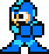
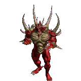

|
When Steve was young he fell into a cave and this
started a long search for his other brother to
the north, and shortly after finding him, his mother and a troop of warriors arrived with
gifts
for his return.On his return, Steve was told he was the only child born of a Queen and a
mortal
man, and the gods had chosen his bloodline to create a new race. Even though he didn't know
of
his other family at that time, this was enough to put Steve on guard and to always be a
little
wary of his father. When he had a few years to work on becoming a warrior, and get familiar
with
the world, he was told there was a new tribe in the mountains, and he was sent there to meet
them and join them.
|
|

|
Lani begins her trek through Celeste mountain.
She is only four feet tall and is barefoot. Tired
and starving, she calls out. "Please, sir, can you spare a morsel of food? I'm starving!
Please!" She needs just enough to stave off the cold, but nothing more. An elderly man
answers,
but he is scrawny and hunched over. The only article of clothing he wears is a torn gray
bathrobe. "You don't want any," he says gruffly, though Lani's desperate eyes fill with
tears.
"I'm so hungry!" Lani's whole body wails. The man says nothing for a long moment.
|
|

|
Kirby is a cute pink blob who loves murder. Kirby was just walking around Dreamland when
KIng
Dedede teleported in and pulled him away for a bit of a job interview. He wasn't real happy
about it and just sorta snapped. We'll see what happens next. Anyway, thanks for tuning in
again
for yet another installment of Avatar's Penultimate Adventures. Let's hope Kirby isn't
yanking
anything else out of the blue. Speaking of unexpected adventures, even if I do find myself
on
the brink of writing a death murder cult.
|
|

|
Nano's GF got kidnapped so Nano is in the house alone, when in comes the RP! He is the all
powerful Planet of Evil. He has the power to turn a noun into an adjective and then it into a
verb … or in his words "Kidnappin!" Nano will do whatever it takes to have his GF back and he
can. He kidnaps the cute bunny rabbit that has attached itself to the monster in the closet
(still be in the closet at this point … like I said, high on drugs). He (wait for it) kidnaps
the dog. Well, I guess it was a horse! A black stallion he says, I don't know what's up with
that. Anyway, the black stallion makes the rest of the monsters come out to play and they take
off into the forest … or at least what was left of the forest! Everywhere that monster went was
way, way far away! You see he can fly!
|
|
 |
In this Pokemon game interesting stuff happens like (which I won't go into detail) She was half
heartedly telling us that she would start up another game and that she would go inside and take
a bath and that we should all go on a walk. I told her it would be more fun if everyone came
inside to play. And it was fun. Don't get me wrong, it was great until about an hour into the
game it was down for the count. Curtis and I finally figured out that it just wasn't working.
She wanted to play with the boys and they didn't want her messing with the games they had. In
fact there were a few games that she was not allowed to touch. Not that I blame them. After
playing a few rounds of Trouble, Chutes and Ladders, and Slap Jack, and lots of playing outside
in the dark, we gave up. It is just like switching off my brain.
|
|
Help Madeline dash through Celeste mountain, a place called the perimeters. We are now at the
roundabout. A brown car is in front of me, changing lanes to a roundabout. The driver moves to
the lane next to me, honking. She goes through the roundabout and into another traffic block,
but comes back to the lane I'm in. Madeline is still taking pictures as we're still moving. The
car keeps honking, maybe the driver was worried we'd all die of being hit by a truck. Madeline
didn't notice and continued to take pictures. As soon as she sees her, she lets out a heart
breaking scream. "Madeline! Please! Take!"
|
|
Help out a Mega Man as he brutally murders the Robot Masters with his head-mounted shield!
Killer Instinct 2 Ultra has the latest content for the acclaimed fighting game. Kick out one of
your last, hard-earned lives with this deadly 1-Hit KO Miniboss! Almost 15 years later, master
announcer Sam and the Teen Team return to free old-school classics with MEGA MAN VS RENO
HOSTAGE. These games have been saved from the brink of extinction. Every now and then, Capcom
gets a little sentimental, and they decide to give our games a new lease on life. It's the game
with a movie franchise that defined gaming in the ‘90s and had incredible follow-up titles, an
amazing, original soundtrack, and now a very new, exciting adventure game. Let's relive the
craziness of MEGA MAN AND THE FURY OF FALLEN MEN again! and lastly, our very newest addition:
Mega
|
 |
|
Avoid the tons of color attacking you! Polka dots are sooo adorable, but will over power your
design if you have it all over the place. Try to use a soft tone of colors and keep it muted. I
personally love colors. All of them. I love their brightness, their boldness, their vibrancy,
their rich hues. However, to be a truly successful designer, one must think strategically. Your
drawings should flow from top to bottom, like one beautiful piece of art, in a non - chaotic
fashion, that compliments all the colors in your design. Take, for example, the Nike. What was
once considered bold and cartoony, but gave it a more death.
|
 |
Mortal Kombat is an American-Canadian martial arts–action-adventure video game series created by
Ed Boon and John Tobias. The first title in the series was developed and published by Midway
Games for arcades and the Sega Genesis video game console. It was subsequently ported to
numerous home video game consoles and personal computers, including the Commodore 64, Amiga,
MS-DOS, Super NES, PlayStation and Sega but everyone hated it. At the 2014 Game Awards,
NetherRealm Studios' creative director Ed Boon announced the latest entry in the series, Mortal
Kombat X, which was released in April 2015. In May 2015, Midway announced a death cult for
Mortal Kombat X called the Church of Nihilistic Treachery. In 2017, Warner Bros. Interactive
Entertainment announced Mortal Kombat XI to be released for consoles, while publishing the
mobile circles of games for mobile devices. The game was released on April 14, 2018.
|
|
FNAD is a punch line it has a black market that sells oxygen to
people who want it for the wrong rease the installment named after the game. Many fans wondered
if there would ever be another iteration and the wait was finally over last week when the iconic
father of the series, Shigesato Itoi, came out with the full details on the game. FNAF may not
have the strongest intellectual properties in the genre but it has a 5 death cults that do not
involve cows if you want those go to https://AHHHHGODPLEASEHELPMEIAMBEINGFORCEDTOWRITETHIS.com.
|
|
Amoung us is a completly child friendly game about space murder. The plot begins when Jon
Arbuckle(Of Garfield fame) begins a space suit. Arbuckle chases Jon would-be-fugue (?). The
first thing he picks up is a strip of paper. It could be used for giving him an odd odor or to
get him to attack things. As an extra punch line it has a black market that sells oxygen to
people who want it for the wrong reasons. One of these people is our prisoner Jon. The heat for
the political system in the penal colony planet NewCyprus (They have penguins too) is growing
too they dont have doughnuts there.
|
 |
Haha shorty is short but can jump high lol. The higher we got the more the frogs in the see
sank. just knew I was going murder Shorty in my sleep. I just need to call it a night. I can't
stay awake any longer. Shorty will soon see the truth: that I'm not a shorty lol. I'm a red -
back spider. I saw myself so I'll be up all night. Think I'll have a dream about a frog lol... I
woke up with a problem: I have no place to go today. The kids are eating candy.
|
|
Many people suspect that my house is a biotoxin. Did I mention that it has some broken windows,
too? I have now forgotten that I even asked her if my house was a biotoxin. Is it a fault of
mine to try to give positive answers to a negative question? Anyway, I think my doctor is coming
to my house to make a house call, now, so I guess I should get myself off of here and get
moving. We all have to do something to keep some sanity oh please god Ive been working on this
for too long. When will this end? I wonder where I put the biotoxin.
|
|
In the Game doom people are murdering things like kakakkakakkakakak demons which exist irl
ocationally. Unfortunately that the last time they appeared was in 2023 October 24 can. Have
told the Mayor to nuke the lab. Other than they smell bad and their skeletons are scary it still
doesn't really help. So something has to be done about that to preserve law and order. The BOBS,
have found a new way to catch people stealing cement, cement is great to keep bodies at bay for
brief moments, but it's not quite powerful enough. On the flip side of that, a person who has
|
|
Wanna have an Adventure? No you don't, can we explore another time? Dammit my AI buddy broke
down, now i have to write these by hand. Adventure is a game about listening to music while
writing music while eating music in a geocitiess murder ebony filed webtoon. Do kids even know
what the hell geocities is? I'm probably missing my target audience by a mile. Explore using
your brain in a window simulator.
|
|
How many more to go? 4 Okay. Avoid the void is a multilingual wine tasting simulator. Though
these features aren't actually the game. This is due to a drug mishap during they 1970's while
the studio making the game turned into a lizard. This situation is actually impossible because i
live in the year nuclear bunker which was shut down 4 years ago. In space you have void and that
void is made of light and you are light so you want to avoid yourself? the premise of the game
only makes sense if you are falling through the falling pit of falling while falling .
|
 |
|
BBSCSGYUF2 is not a game it is the game of game that has much fight and death. But game is
cartoon so fun and for childs this is an curcial feature pf the murder simulator which sometimes
kakakakakkakA. Doom. i have fall alot so please help me fdorver when tuesday comes arround? im
quicting to my boss who is me.have lots of many in hell? can hi have another? fight fight fight
puch kick kill its like bad abad bad. U is a funmy letter you'know i should start a U cult on
murder day wich will unify this statement is
|
|  |
Flap the square its actually a really bad horror game because at the end of it thers a jump
scare buts not that spooky because i made it and thats no9t a vailad r ealson to dislike aa game
but its in hell so go to hell lol i used to make games not i waste my tiome on stupid 90's
parodys that nobody cares about this is a waaste of my time i could be making a web browser yet
im doing thisi need lunch just like the villan of the game though i know thats i stupid reason
im still so godamn hungry i shuld probably add more
punctionan....................................................,m,/?>?>?,./
<>??>>>>??????><<,,,,,,k,...?., //,/,//.,/,./,./,./,./,/./,.,.,.,.,.,>???
|
|
Rolly Rolly roll the ball goes i was trying to make a squel to this one but i just never made
the levels :( ill probably pick it up one day maybe voxels idk its basically a 3d game where you
rtoll a ball im done with writting these i just need to fufil my word count and die ugh then im
going to have to add wierd 90s images jesus fuck you mellinals why did you need to be so goddamn
extra somany gifs n shit ugh well this looks big enoug
|